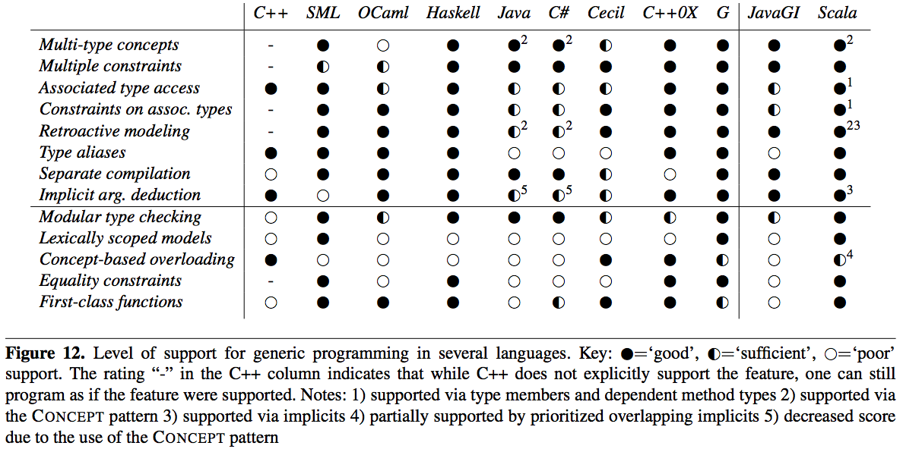

自己紹介

- twitter @xuwei_k
- github xuwei-k
- blog http://d.hatena.ne.jp/xuwei
- 無職 ヽ(‘ω’)ﾉ三ヽ(‘ω’)ﾉ
- Scalaを使って仕事をやっていた 時期があった
#ScalaBase #ScalaBase合宿 よっぱらう発表者! 寝る発表者! Scalaの勉強をする参加者! 仕事をするbleisさん!
— mzp (@mzp) October 20, 2012
一杯しか飲んでいないのに、酔っ払って寝不足で9〜12時くらいまで寝てましたすいません。
そして、起きて、このスライドを仕上げようとしたら・・・
となりの部屋から、AV観てるのか、実際呼んでるのかわからないけど、喘ぎ声が聞こえてくる件 #ScalaBase
— Kenji Yoshida (@xuwei_k) October 20, 2012
レストランに並びながら、ほぼ全員PCを広げている謎の集団 #ScalaBase twitter.com/xuwei_k/status…
— Kenji Yoshida (@xuwei_k) October 21, 2012
1. Introduction
2. Type Classes in Haskell 2.1 Single-parameter type classes 2.2 Common extensions
3. Implicits 3.1 Implicits in Scala 3.2 Implicits as the missing link
4. The CONCEPT Pattern 4.1 Concepts: type-class-style interfaces in OO
5. Applications and Comparison with Type Classes 5.1 Ordering concept 5.2 Abstract data types 5.3 Statically-typed printf 5.4 Type class programs are OO programs
6. Advanced Uses of Type Classes 6.1 Associated types in GHC Haskell 6.2 Implicits and type members 6.3 Session types 6.4 Arity-polymorphic ZipWith in Scala 6.5 ZipWith using prioritised overlapping implicits 6.6 Encoding generalized constraints 6.7 Type theories using implicits
7. Discussion and Related Work 7.1 Real-world applications 7.2 Type classes, JavaGI and concepts 7.3 Generic programming in the large
8. Conclusion
2010年の論文
- 2.8.0が出る前
- 2.8.0.final がでたのは 2010/7/14
書いた人
- Odersky先生
- Adriaan Moors( EPFLの人で、昔からScala関わってる人 )
- Bruno C. d. S. Oliveira (誰?)
＿人人人人人人＿ ＞ 型クラス ＜ ￣^Y^Y^Y^Y^￣
＿人人人人人人＿ ＞ implicit ＜ ￣^Y^Y^Y^Y^￣
1 簡単な例(ord)を出して、Scalaでの型クラスを説明
論文の最初にでてくる例
型クラスの定義
trait Ord [T] {
def compare (a :T,b :T):Boolean
}
型クラスのインスタンスの定義
implicit object intOrd extends Ord [Int] {
def compare (a :Int,b :Int):Boolean = a < b
}
使い方
scala> sort (List (3,2,1))
List (1,2,3)
- このくらいは既になんとなく知ってますよね？
- まさに、上記のようなものが標準ライブラリに入ってます
2 Scalaと対比させつつ、Haskellでの型クラスの説明
Multiple parameter type class
class Coerce a b where
coerce :: a -> b
instance Coerce Char Int where
coerce = ord
instance Coerce Float Int where
coerce = floor
Overlapping instance
instance Ord a -> Ord [a] where ...
instance Ord [Int] where ...
3 Scalaにおけるimplicit(parameterとconversion両方)の詳細な説明
- 初歩的なimplicit自体の文法の説明
- 単にデフォルト値的な使い方できるよね
- implicit が、scopeを持てる、それによる優先度について
- この章で Pimp my Library について軽く説明あるのだけど、なぜここででてくるのかいまいち流れがわからない・・・
4 Concept Pattern
Concept Patternの利点として以下の点があるらしい
- Retroactive modeling
- Multiple method
- Binary(or n-ary)methods
- Factory methods
JavaやC#のようなオブジェクト指向言語では以下の様にするが、これとの違いは？
trait Ord[T]{
def compare(x:T):Boolean
}
class Apple(x:Int) extends Ord[Apple]
a = new Apple(3);
a.compare(new Apple(5));
a = new Apple(3);
ordApple.compare(a,new Apple(5));
- C#の拡張メソッド
- Haskellのtype class
- JavaGI
- C++0x の concepts
JavaGIではこんな感じで型クラスのインスタンス定義?
implimentation Iterable<Character> [String] {
public Iterator<Character> iterator() {
return new Iterator<Character>() {
private int index = 0;
public boolean hasNext() { return index < length(); }
public Character next() { return charAt(index++); }
};
}
}
それらでも、同じようなことを表現できるが、ScalaのImplicitを使ったアプローチは
This make the pattern very natural to use without an additional, pattern-specific, language construct.
であるという主張
5 以下の様な、実際によくある様な例をだして、Type classでのアプローチと、オブジェクト指向でのアプローチの比較。(また、すべての例について、Haskellのコードもあって、Haskellとの比較も？)
- Ordering concept
- Abstract data types
- Statically-typed printf
- Type class programs are OO programs
- 1 さんざん例でつかってきた Ord について
- 2 以下の様な例を使って、ADTとtype classについての考察
trait Set[S]{
val empty:S
def insert(x:S,y:Int):S
def contains(x:S,y:Int):Boolean
def union(x:S,y:S):S
}
trait ListSet extends Set[List[Int]]{
val empty = List()
def insert(x:List[Int],y:Int) = y :: x
def contains(x:List[Int],y:Int) = x.contains(y)
def union(x:List[Int],y:List[Int]) = x.union(y)
}
trait FunctionalSet extends Set[Int => Boolean]{
val empty = (x:Int) => false
def insert(f:Int => Boolean,y:Int) =
z => y.equal(z) | f(z)
def contains(f:Int => Boolean,y:Int) = f(y)
def union(f:Int => Boolean,g:Int => Boolean) =
y => f(y) | g(y)
}
val setImpl1 = new ListSet()
val setImpl2 = new FunctionalSet()
def test1[S](s:Set[S]):Boolean =
x.contains(s.insert(s.insert(s.empty),5),6),6)
6 は更に高度な話で、ここをちゃんと説明するのは無理ぽ・・・
- まず、HaskellでのAssociated typeの説明
- 次に、Scalaでtype member + dependet method type を使って、Associated typeをどのように表現するか？という話
- session type
- Arity polymorphic ZipWith in Scala
- ZipWith using prioritised overlapping implicits
encoding generalized constraints
Type theories using implicits
- CanBuildFrom の話とか
trait ZipWith[S] {
type ZipWithType
def manyApp : Stream[S] => ZipWithType
def zipWith : S => ZipWithType =
f => manyApp (repeat (f))
}
class ZipWithDefault f
implicit def ZeroZW [S] = new ZipWith[S] f
type ZipWithType = Stream[S]
def manyApp = xs => xs
}
}
object ZipWith extends ZipWithDefault f
def apply [S] (s: S) (implicit zw:ZipWith[S])
:zw.ZipWithType = zw.zipWith (s)
implicit def SuccZW [S,R](implicit zw:ZipWith[R])
= new ZipWith[S => R] {
type ZipWithType = Stream[S] => zw:ZipWithType
def manyApp = xs => ss =>
zw:manyApp (zapp (xs,ss))
}
}
7 Discussion and Related Work
- 7.1 Real-world applications
- 7.2 Type classes, JavaGI and concepts
- 7.3 Generic programming in the large
7 にでてくる表

参照されている論文など(一部)
- A comparison of C++ concepts and Haskell type classes
- Making implicit parameters explicit. Technical report, Institute of Information and Computing Sciences
- Fun with type functions
- Pimp my Library
- Objects to unify type classes and GADTs
- A language for generic programming in the large. Science of Computer Programming, In Press, Corrected Proof